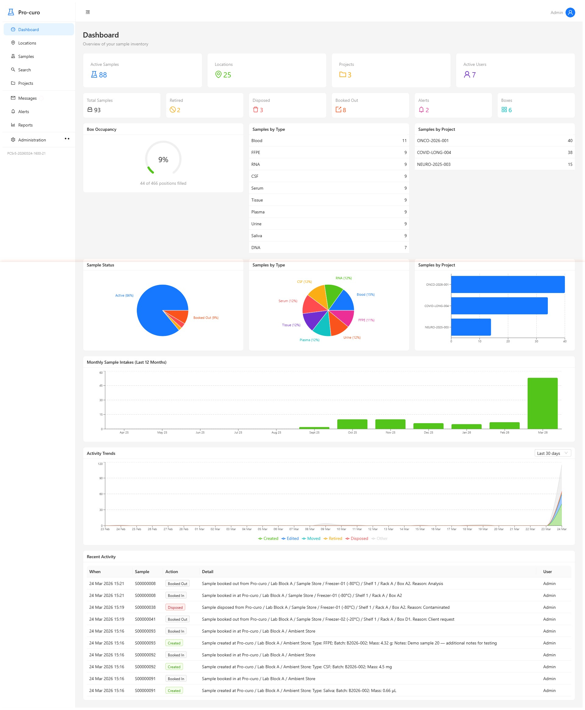
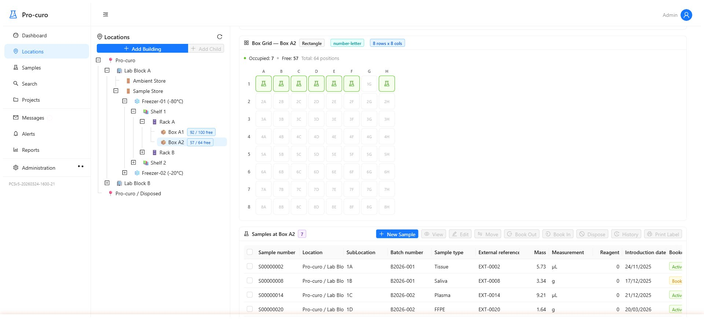
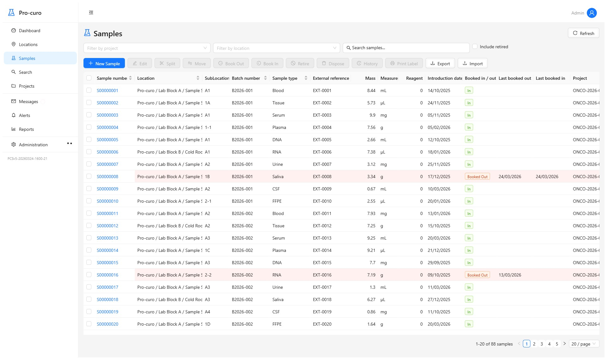
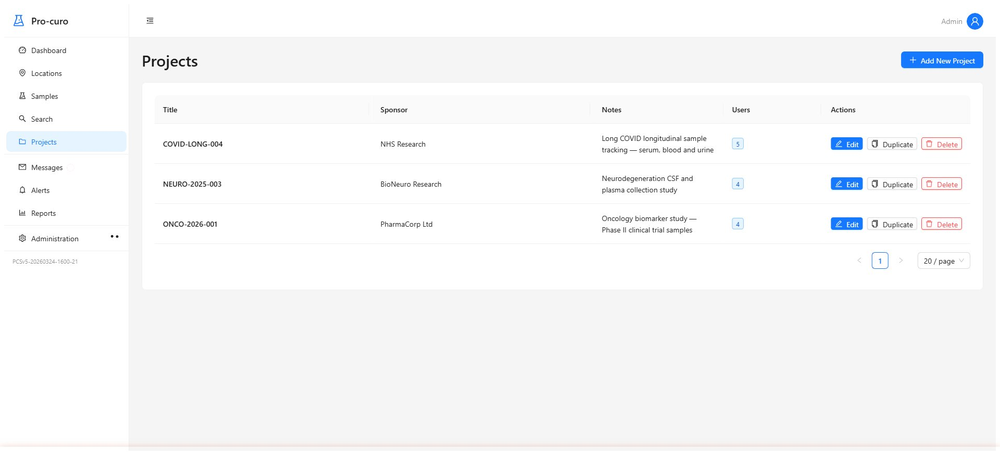
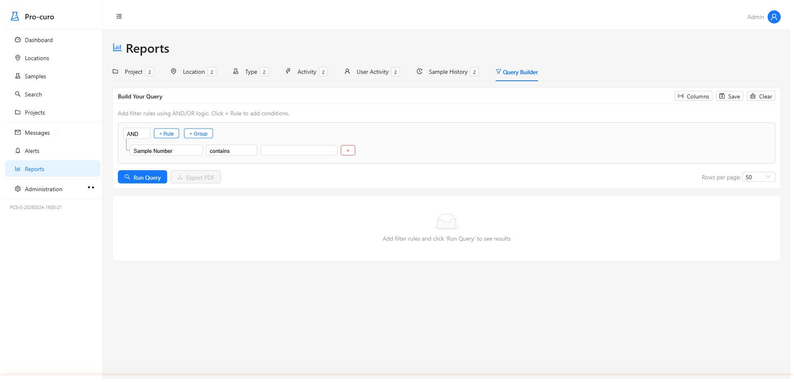
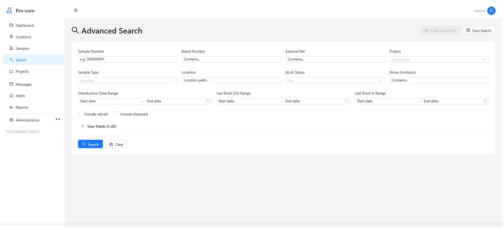
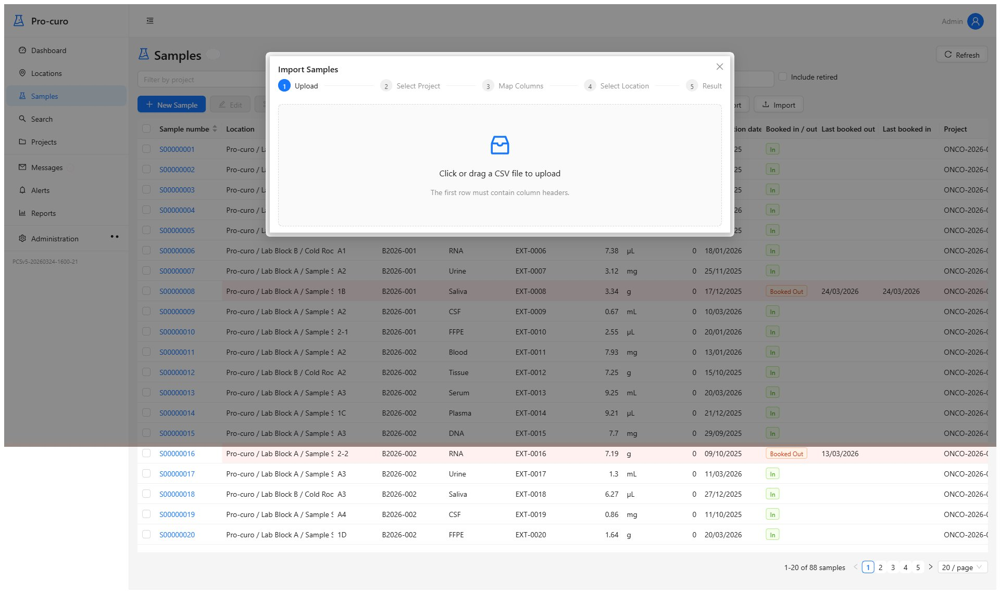
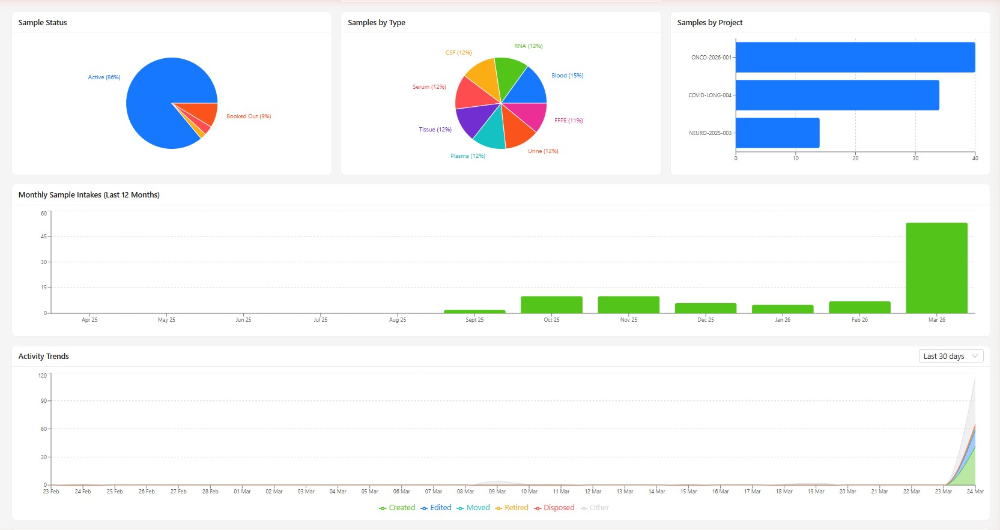
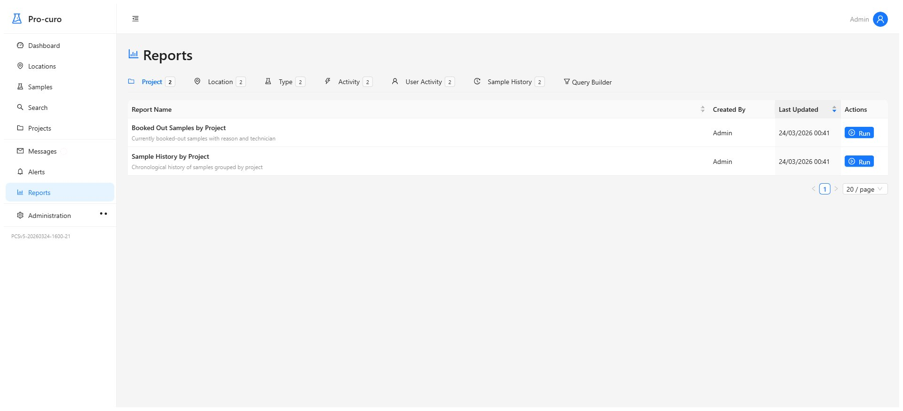

Pro-curo Version 5 has been rebuilt from the ground up with a modern technology stack, a brand-new user interface, and powerful new features — designed to make your day-to-day work faster and easier.
Access from any device with a modern browser — no installation needed.
Deploy on our cloud or your own servers — your data, your choice.
Role-based access, JWT auth, and a full audit trail on every record.
Real-time KPIs, charts, and project summaries at a glance.
The all-new dashboard gives you a live overview of your operations the moment you log in. Customisable widgets display KPIs, project statuses, trend charts, and quick-access links to your most recent work — all updating in real time.

Navigate your entire site hierarchy with an intuitive tree view. Clicking any location opens a detail panel showing linked samples, documents, notes, and history — no page reloads, no hunting through menus.

Track samples through every stage of their lifecycle — from registration and storage through to analysis and disposal. Attach documents, photos, and chain-of-custody records, and use powerful filtering to find any sample in seconds.

Organise work by project, client, or site. Assign tasks, set deadlines, and track progress — with everything linked to the right samples and locations. No more juggling spreadsheets and emails.

Build custom data queries without writing a line of code. The visual query builder lets you filter, group, and sort your data with drag-and-drop simplicity, then export to CSV or generate polished PDF reports. Save and share your favourite queries with the team.

Find any record in seconds with cross-entity global search. Combine advanced filters, save frequent searches as presets, and get instant results as you type.

Migrating data or importing bulk records is now straightforward. The step-by-step wizard maps your CSV columns to Pro-curo fields, validates your data before import, and gives you a clear summary of what was imported — with rollback if anything needs correcting.

Version 5 has been engineered from scratch with a modern, enterprise-grade technology stack.
A fast, responsive front-end built with React and the Ant Design component library.
Robust API backend with JWT authentication and role-based access control.
Enterprise-grade database with ACID compliance and full-text search.
Containerised for consistent, repeatable deployments — cloud or on-premise.
Generate professional PDF reports with customisable templates.
Every change logged — who, what, when, and the previous value.
A selection of screenshots from Pro-curo Version 5.


Get in touch to arrange a personalised demo or discuss upgrading your current Pro-curo installation.
Request a Demo